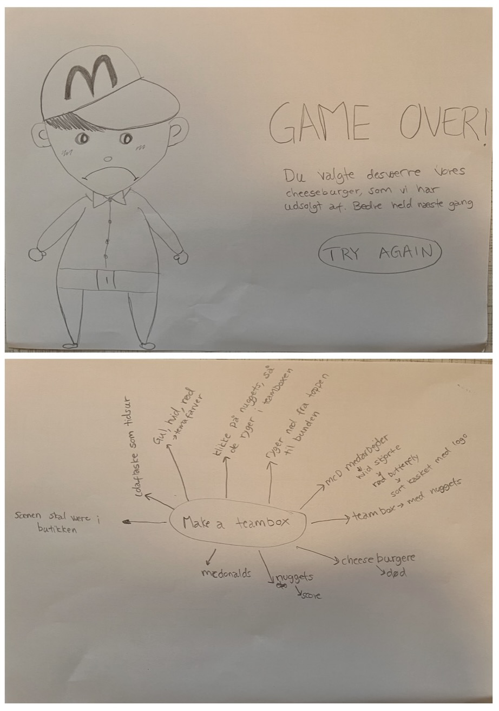

Portfolio - Nicoline Wedel
Tema 4 Grundlæggende Animation

Individuelt spil
Vi skulle i dette tema starte med at vælge et stiludgangspunkt for derefter at lave en paper prototype over vores spil. Mine tegninger kan man se i højre side, og er lavet på ideen om et Mc’Donalds spil, som foregår i McD-butikken. Her skal der ryge nuggets og cheeseburgere ned fra toppen af hjemmesiden, og så skal man kunne klikke på alle de nuggets man kan, i stedet for cheeseburgerne. Og hver gang du klikker på en nugget, ryger den i en teambox, og hvis du trykker på cheeseburgeren mister du et liv, og du har 3 liv inden ”GAME OVER”. Det gælder om at få samlet 20 nuggets i teamboxen, før du har vundet.
Jeg har valgt at bruge en Cola som ”timer”, så der er mindre cola i colaflasken jo længere tid, der er gået.
Jeg har designet og lave spillet i stilen “Kawaii”, som er en stil der ikke er for detaljeret, men har runde former, store hoveder, runde øjne og næser, med inspiration fra baby-face bias. Skriften er blød, der er gjort brug af lyse og indbydende farver. Vi lærte om baggrundsdesign, hvor jeg fik nogle gode indsigter i Rule of thirds, Fokuspunkt, Atmosfærisk perspektiv, Horisontlinje og Dybde i billedet
Jeg skulle ud fra min ide også lave et aktivitetsdiagram, så man punkt for punkt kunne følge med i processen i spillet for hver ting, man klikkede på. Det giver andre en forståelse for sin ide på en detaljeret måde for derefter at kode det ind i Javascript.
JavaScript bruges til at tilføje interaktivitet og dynamik til ens hjemmeside, f.eks. at reagere på brugerens handlinger, hente data fra en server osv. Det er et programmeringssprog, der kører i browseren og er et af de mest grundlæggende og udbredte programmer sammen med HTML og CSS.
Kigger man på min javascript kode, så skal jeg få den ”røde”, som er en figur på skærmen, til at forvinde, når man klikker på den. Min funktion hedder ClickRedHandler og får første console.log for at kunne se den i sin browser, når man går ind på sin inspec-console. Den får herefter en querySelector på, der vælger min ”#red_container”, som er figuren i min HTML, og den forsvinder så, når man klikker på den, da den har fået classList ”forsvind”.
Jeg afprøvede også en anden funktion, som gik ud på at få figuren til at ”flyve” hen over skærmen, hvor den skulle fryse, når man klikker på den og bagefter forsvinde helt fra skærmen. Derefter skulle den genstarte og fortsætte, men bare med en ny position.
Lige som før, har jeg sat en console.log på min clickRedHandler, derunder en querySelector, der nu har classList ”frys”, derefter tilføjer jeg en sprite til classList ”forsvind”, da man typisk bruger sprite, hvis noget skal forsvinde, og container hvis det bare skal køre frem og tilbage på skærmen.